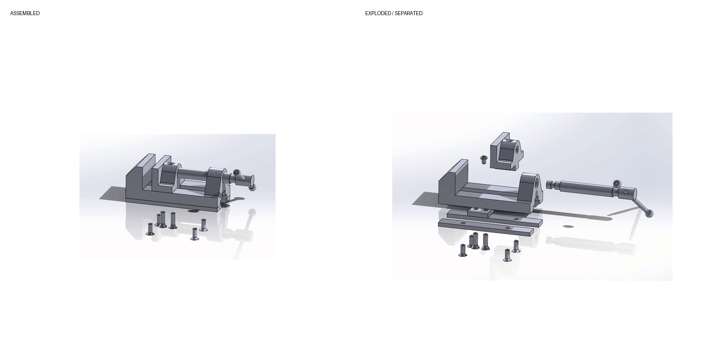

Academic Assembly Project
Bench Vise Assembly
A multi-component bench-vise assembly showing the relationship between the base, vise jaw, screw-and-handle components, plates, and fasteners. The saved exploded-view animation makes the internal component structure visible.
Multi-component assemblyExploded viewMechanical relationshipsSOLIDWORKS